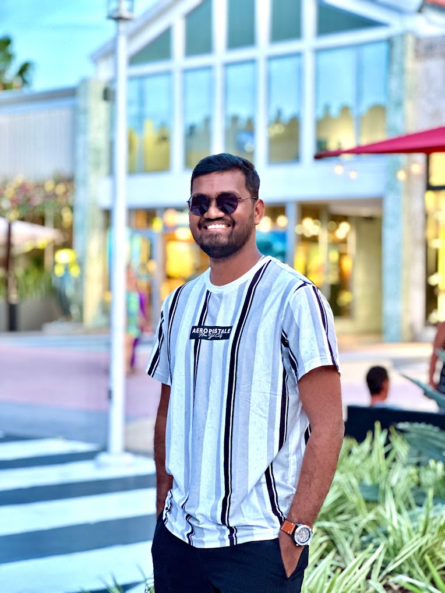

Somanath Reddy

Objective
To obtain a position that will allow me to learn, develop, utilize my technical skills and experience in
making the organization successful.
Academic Details
Professional Experience
-
Mobileum Technologies Pvt. ltd - Banglore, India (Jan 2021 - Dec 2022)
Started working as an Implementation Engineer and then got promoted to Integration Engineer by the end of 2021.
Experience Includes:
-
Subject matter experience in telecom RA Usage Control (UC), PBV, FMS ETL tools.
-
Project lifecycle – Including hands-on experience in Pre-analysis, Analysis, Data gathering, Customer
interaction, Configuration E2E, Customer Trainings , SIT and UAT Activities.
-
Recent exposure – Worked on implementation of RAID UC and FMS for MTN Opco’s like Ivory
Coast, Benin, South Sudan from the time of Installation of modules/servers, Development, SIT, UAT
Activities and Data gathering.
-
Exposure across various functions and roles – Worked as an implementation engineer,
Integration Engineer.
Customers Worked With:
-
Revenue Assurence for Orange MEA Opco’s(Cameroon, Congo, Sierra Leone, Liberia, Burkina Faso)
-
Revenue Assurence for Asia Cell.
-
Revenue Assurence for Etisalat UAE.
Skills
-
Business Analysis - ETL, Data Gathering, Data Analysis.
-
Domain - Telecommunication, Revenue Assurence, Platform Integrity, Prepaid Balance Validation.
-
Tool - RAID.
-
Programming Languages - C, Java , Python, Shell Script.
-
Db/Os - Oracle 11g, PG12 , SQL server , UNIX/LINUX.
-
Other Tools - Putty and FileZilla, WinSCP, SQL Developer tools, Notepad++ and
Dbeaver.
Achivements
-
Won First prize for the project "Sports Me" in the Mini project competition conducted at Hindustan University in 2018.
-
Won Third Prize at "Code Fudge" competition at Hindustan University in 2019.
-
Won Best Team Player of the quater in Q2 2022 at Mobileum Private Technologies.
Technical Trainings
-
Cloud Concepts, Virtualisation, IT Infrastructure training by IBM(2016 -2020).
-
Data Science and Big Data Analytics - 2019.
Other Activities
-
Participated in Hackathon on Dockers and Containers organized by IIT Chennai, India.
-
Won a inter-university cricket tournament and lead my university team as a
captain.
Personal Details